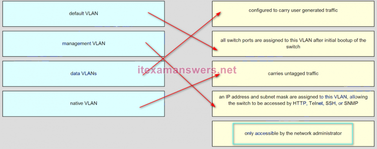

1.Consulte la presentación. Suponiendo que las tablas de enrutamiento están actualizadas y que no se necesitan mensajes ARP, después de que un paquete sale de H1, ¿cuántas veces se reescribe el encabezado L2 en la ruta a H2?
- 2 *
- 5
- @javi__super
2.Consulte la presentación. ¿Qué valor resaltado representa una red de destino específica en la tabla de enrutamiento?
- 10.16.100.128 *
- 0.0.0.0
- 10.16.100.2
- 110
- @javi__super
3.¿Qué tipo de ruta estática está configurada con una mayor distancia administrativa para proporcionar una ruta de respaldo a una ruta aprendida de un protocolo de enrutamiento dinámico?
- ruta estática flotante *
- ruta estática por defecto
- ruta estática sumaria
- ruta estática estándar
- @javi__super
4.Consulte la presentación. ¿Qué ruta se configuró como una ruta estática a una red específica utilizando la dirección del siguiente salto?
- S 10.17.2.0/24 [1/0] a través de 10.16.2.2 *
- S 0.0.0.0/0 [1/0] a través de 10.16.2.2
- C 10.16.2.0/24 está directamente conectado, Serial0 / 0/0
- S 10.17.2.0/24 está conectado directamente, Serial 0/0/0
- @javi__super
5.¿Qué combinación de prefijo de red y longitud de prefijo se usa para crear una ruta estática predeterminada que coincidirá con cualquier destino de IPv6?
- :: / 0 *
- : / 128
- FFFF: / 128
- :: 1/64
- @javi__super
6.Un enrutador ha utilizado el protocolo OSPF para aprender una ruta a la red 172.16.32.0/19. ¿Qué comando implementará una ruta estática flotante de respaldo a esta red?
- ruta ip 172.16.32.0 255.255.224.0 S0 / 0/0 200 *
- ruta ip 172.16.0.0 255.255.240.0 S0 / 0/0 200
- ruta ip 172.16.0.0 255.255.224.0 S0 / 0/0 100
- ruta ip 172.16.32.0 255.255.0.0 S0 / 0/0 100
- @javi__super
7.Consulte la presentación. Actualmente el enrutador R1 usa una ruta EIGRP aprendida de Branch2 para alcanzar la red 10.10.0.0/16. ¿Qué ruta estática flotante crearía una ruta de respaldo a la red 10.10.0.0/16 en caso de que el enlace entre R1 y Branch2 se caiga?
- ruta ip 10.10.0.0 255.255.0.0 209.165.200.225 100 *
- ruta ip 10.10.0.0 255.255.0.0 Serial 00/0 100
- ruta ip 10.10.0.0 255.255.0.0 209.165.200.226 100
- ruta ip 10.10.0.0 255.255.0.0 209.165.200.225 50
- @javi__super
8.¿Qué enunciado describe una ruta que se ha aprendido dinámicamente?
- Se actualiza y mantiene automáticamente mediante protocolos de enrutamiento. *
- No se ve afectado por los cambios en la topología de la red.
- Tiene una distancia administrativa de 1.
- Se identifica con el prefijo C en la tabla de enrutamiento.
- @javi__super
9.En comparación con las rutas dinámicas, ¿cuáles son las dos ventajas de usar rutas estáticas en un enrutador? (Escoge dos.)
- Mejoran la seguridad de la red *
- Cambian automáticamente la ruta a la red de destino cuando cambia la topología
- Usan menos recursos de enrutador *
- Mejoran la eficiencia del descubrimiento de redes vecinas.
- @javi__super
10.Para habilitar el enrutamiento RIPv1 para una subred específica, el administrador de red ingresó la red de comandos de configuración 172.16.64.32. ¿Qué dirección, si hay alguna, aparece en el archivo de configuración en ejecución para identificar esta red?
- 172.16.0.0 *
- 172.16.64.32
- 172.16.64.0
- No se muestra ninguna dirección.
- @javi__super
11.Un administrador de red agrega el comando de origen de información predeterminada a la configuración de un enrutador que usa RIP como protocolo de enrutamiento. ¿Qué resultará de agregar este comando?
- El enrutador propagará una ruta estática predeterminada en sus actualizaciones de RIP, si hay una presente *
- El enrutador solo reenviará paquetes que se originen en redes conectadas directamente.
- El enrutador se restablecerá a la información predeterminada de fábrica
- El enrutador no reenviará la información de enrutamiento que se aprende de otros enrutadores
- @javi__super
12.Consulte la presentación. ¿Cuál es el valor de la distancia administrativa que indica la ruta para que R2 alcance la red 10.10.0.0/16?
- 1 *
- 0
- 90
- 20349495
- @javi__super
13.¿Qué ruta utilizará un enrutador para reenviar un paquete IPv4 después de examinar su tabla de enrutamiento para encontrar la mejor coincidencia con la dirección de destino?
- una ruta definitiva de nivel 1 *
- una ruta infantil de nivel 1
- una ruta principal de nivel 1
- una ruta de supernet de nivel 2
- @javi__super
14.Consulte la presentación. Un administrador está intentando instalar una ruta estática IPv6 en el enrutador R1 para llegar a la red conectada al enrutador R2. Después de ingresar el comando de ruta estática, la conectividad a la red sigue fallando. ¿Qué error se ha cometido en la configuración de la ruta estática?
- La interfaz es incorrecta *
- El prefijo de red es incorrecto.
- La red de destino es incorrecta.
- La siguiente dirección de salto es incorrecta.
- @javi__super

15.Un administrador de red revisa la tabla de enrutamiento en el enrutador y ve una ruta a la red de destino 172.16.64.0/18 con una dirección IP de siguiente salto de 192.168.1.1. ¿Cuáles son dos descripciones de esta ruta? (Escoge dos.)
- Ruta por defecto
- ruta principal
- Ruta por defecto
- ruta final *
- @javi__super
16.¿Qué dos factores son importantes a la hora de decidir qué protocolo de enrutamiento de puerta de enlace interior utilizar? (Escoge dos.)
- escalabilidad *
- Selección de ISP
- velocidad de convergencia *
- El sistema autónomo que se utiliza.
- @javi__super
17.Los empleados de una empresa conectan sus computadoras portátiles inalámbricas a la LAN de la empresa a través de puntos de acceso inalámbricos que están cableados a los puertos Ethernet de los conmutadores. ¿En qué capa del modelo de diseño de red jerárquico de tres capas funcionan estos conmutadores?
- acceso *
- fisico
- enlace de datos
- núcleo
- @javi__super
18.¿Cuál es una función básica de la capa de acceso de Cisco Borderless Architecture?
- proporciona acceso al usuario *
- agrega dominios de difusión de Capa 2
- agrega límites de enrutamiento de capa 3
- proporciona aislamiento de fallas
- @javi__super
19.¿Cuál es una característica de la capa de distribución en el modelo jerárquico de tres capas?
- proporciona acceso al resto de la red a través de políticas de conmutación, enrutamiento y acceso a la red *
- Distribuye el acceso a los usuarios finales.
- representa el borde de la red
- actúa como la columna vertebral de la red, agregando y distribuyendo el tráfico de red en todo el campus
- @javi__super
20.¿Qué información utiliza un conmutador para rellenar la tabla de direcciones MAC?
- la dirección MAC de origen y el puerto entrante *
- La dirección MAC de destino y el puerto entrante
- La dirección MAC de destino y el puerto de salida
- Las direcciones MAC de origen y destino y el puerto entrante
- @javi__super
21.¿Qué afirmación es correcta acerca de las decisiones de reenvío de tramas del conmutador Ethernet?
- Las decisiones de reenvío de tramas se basan en la dirección MAC y las asignaciones de puertos en la tabla CAM *
- Los marcos de unidifusión siempre se reenvían independientemente de la dirección MAC de destino
- El reenvío de cuadros de corte directo garantiza que los cuadros no válidos siempre se eliminan
- Solo las tramas con una dirección de destino de difusión se reenvían a todos los puertos de conmutación activos
- @javi__super
22.¿Cuál es el nombre de la capa en el diseño de red conmutada sin bordes de Cisco que tendría más switches implementados que otras capas en el diseño de red de una organización grande?
- acceso *
- núcleo
- enlace de datos
- red
- @javi__super
23.¿Qué método de conmutación elimina las tramas que no pasan la verificación FCS?
- conmutación de almacenamiento y envío *
- conmutación sin fronteras
- conmutación por corte
- búfer de puerto de entrada
- @javi__super
24.¿En qué situación un conmutador de Capa 2 tiene una dirección IP configurada?
- cuando el conmutador de Capa 2 debe gestionarse de forma remota *
- cuando el conmutador de Capa 2 utiliza un puerto enrutado
- cuando el conmutador de Capa 2 es la puerta de enlace predeterminada del tráfico de usuarios
- cuando el conmutador de Capa 2 necesita reenviar el tráfico del usuario a otro dispositivo
- @javi__super
25.Consulte la presentación. Un ingeniero de redes está examinando una configuración implementada por un nuevo interno que conectó un teléfono IP a un puerto de switch y configuró el switch. Identifique el problema, en su caso, con la configuración.
- La configuración es correcta. *
- La VLAN de voz debe ser de 150.
- Debe haber una VLAN de datos agregada.
- Falta la función de protección BPDU del árbol de expansión.
- @javi__super
26.Un administrador de red está configurando un nuevo conmutador Cisco para el acceso de administración remota. ¿Qué tres elementos deben configurarse en el conmutador para la tarea? (Elige tres.)
- líneas vty *
- puerta de enlace predeterminada *
- Dirección IP *
- dirección de bucle invertido
- @javi__super
27.Se le ha pedido a un técnico de red que asegure todos los conmutadores en la red del campus. Los requisitos de seguridad son que cada conmutador aprenda y agregue automáticamente las direcciones MAC tanto a la tabla de direcciones como a la configuración en ejecución. ¿Qué configuración de seguridad de puerto cumplirá estos requisitos?
- direcciones MAC seguras y pegajosas *
- direcciones MAC seguras de auto
- direcciones MAC seguras dinámicas
- direcciones MAC seguras estáticas
- @javi__super
28.Un administrador de red está configurando la seguridad del puerto en un switch de Cisco. Cuando se produce una violación, ¿qué modo de violación que se configura en una interfaz hará que los paquetes con una dirección de origen desconocida se eliminen sin que se envíe una notificación?
- proteger *
- off
- restringir
- apagar
- @javi__super
29.Dos empleados en el departamento de ventas trabajan turnos diferentes con sus computadoras portátiles y comparten el mismo puerto Ethernet en la oficina. ¿Qué conjunto de comandos permitiría que solo estas dos computadoras portátiles utilicen el puerto Ethernet y creen una entrada de registro de infracción sin cerrar el puerto si se produce una infracción?
- Acceso a modo de puerto de conexión *
switchport port-security *
switchport port-security maximum 2 *
switchport port-security mac-address sticky *
switchport port-security violation restrict* - modo de puerto de conmutación acceso puerto de puerto de seguridad
- switchport mode access switchport port-security maximum 2 switchport port-security mac-address sticky
- modo de puerto de conmutación acceso puerto de puerto de puerto de seguridad máximo 2 puerto de puerto de puerto de seguridad de mac-dirección fijo puerto de puerto de puerto puerto de seguridad de protección contra la protección
- @javi__super
30.Consulte la presentación. ¿Qué protocolo debe configurarse en el puerto SW-A 0/1 si se trata de enviar tráfico desde varias VLAN para cambiar SW-B?
- IEEE 802.1Q *
- RIP v2
- Árbol de expansión
- ARP
- @javi__super
31.Se ha agregado un conmutador Cisco Catalyst para admitir el uso de varias VLAN como parte de una red empresarial. El técnico de red considera necesario borrar toda la información de VLAN del conmutador para incorporar un nuevo diseño de red. ¿Qué debe hacer el técnico para realizar esta tarea?
- Elimine la configuración de inicio y el archivo vlan.dat en la memoria flash del conmutador y reinícielo *
- Borrar la configuración de inicio y reiniciar el interruptor
- Borre la configuración en ejecución y reinicie el interruptor
- Elimine la dirección IP asignada a la VLAN de administración y reinicie el conmutador.
- @javi__super
32.¿Qué hará un switch LAN de Cisco si recibe una trama entrante y la dirección MAC de destino no aparece en la tabla de direcciones MAC?
- Reenvíe el marco a todos los puertos excepto al puerto donde se recibe el marco. *
- Suelta el marco.
- Enviar el marco a la dirección de la puerta de enlace predeterminada.
- Utilice ARP para resolver el puerto que está relacionado con el marco.
- @javi__super
33.¿Qué VLAN se permiten en una troncal cuando el rango de VLAN permitidas se establece en el valor predeterminado?
- Se permitirán todas las VLAN a través de la troncal *
- Los conmutadores negociarán a través de VTP qué VLANs permitirán a través de la troncal
- Solo se permitirá VLAN 1 a través del troncal.
- Solo se permitirá la VLAN nativa en el troncal
- @javi__super
34.Consulte la presentación. Un administrador de red está configurando el enrutamiento entre VLAN en una red. Por ahora, solo se está utilizando una VLAN, pero pronto se agregarán más. ¿Cuál es el parámetro faltante que se muestra como el signo de interrogación resaltado en el gráfico?
- Identifica el número de VLAN *
- It identifies the type of encapsulation that is used
- Identifica la subinterfaz.
- Identifica el número de VLAN nativo
- @javi__super
35.Un administrador de red está diseñando una ACL. Las redes 192.168.1.0/25, 192.168.0.0/25, 192.168.0.128/25, 192.168.1.128/26 y 192.168.1.192/26 se ven afectadas por la ACL. ¿Qué máscara de comodín, si existe, es la más eficiente de usar cuando se especifican todas estas redes en una sola entrada de permiso ACL?
- 0.0.1.255 *
- 0.0.0.127
- 0.0.0.255
- 0.0.255.255
- @javi__super
36.Las computadoras utilizadas por los administradores de red para una escuela están en la red 10.7.0.0/27. ¿Qué dos comandos se necesitan, como mínimo, para aplicar una ACL que garantice que solo los dispositivos que utilizan los administradores de red tendrán acceso Telnet a los enrutadores? (Escoge dos.)
- clase de acceso 5 en *
- access-list 5 deny any
- lista de acceso estándar VTY
- lista de acceso 5 permiso 10.7.0.0 0.0.0.31 *
- @javi__super
37.Un ingeniero de redes ha creado una ACL estándar para controlar el acceso SSH a un enrutador. ¿Qué comando aplicará la ACL a las líneas VTY?
- clase de acceso 11 en *
- grupo de acceso 11 en
- lista de acceso 11 en
- lista de acceso 110 en
- @javi__super
38.¿Cuál es la razón por la que el mensaje DHCPREQUEST se envía como una transmisión durante el proceso DHCPv4?
- para notificar a otros servidores DHCP en la subred que la dirección IP fue arrendada *
- para hosts en otras subredes para recibir la información
- para notificar a otros hosts que no soliciten la misma dirección IP
- para que los enrutadores llenen sus tablas de enrutamiento con esta nueva información
- @javi__super
39.¿Qué conjunto de comandos configurará un enrutador como un servidor DHCP que asignará direcciones IPv4 a la LAN 192.168.100.0/23 mientras se reservan los primeros 10 y las últimas direcciones para asignación estática?
- ip dhcp, dirección excluida 192.168.100.1 192.168.100.10
ip dhcp dirección excluida 192.168.101.254
ip dhcp pool LAN POOL-100
red 192.168.100.0 255.255.254.0
enrutador predeterminado 192.168.100.1 * - ip dhcp, dirección excluida 192.168.100.1 192.168.100.10
ip dhcp dirección excluida 192.168.100.254
ip dhcp pool LAN POOL-100
puerta de enlace ip predeterminada 192.168.100.1 - ip dhcp, dirección excluida 192.168.100.1 192.168.100.9
- cece
- @javi__super
40.¿Qué comando, cuando se emite en el modo de configuración de la interfaz de un enrutador, permite que la interfaz adquiera una dirección IPv4 automáticamente de un ISP, cuando ese enlace al ISP está habilitado?
- dirección ip dhcp *
- ip dhcp pool
- servicio dhcp
- ip helper address
- @javi__super
41.Consulte la presentación. Un administrador de red está configurando un enrutador como un servidor DHCPv6. El administrador emite un comando show ipv6 dhcp pool para verificar la configuración. ¿Qué enunciado explica la razón por la que el número de clientes activos es 0?
- El servidor DHCPv6 no mantiene el estado bajo una operación DHCPv6 sin estado. *
- La dirección de la puerta de enlace predeterminada no se proporciona en el grupo.
- Ningún cliente se ha comunicado con el servidor DHCPv6 todavía.
- La configuración del grupo DHCP de IPv6 no tiene un rango de direcciones IPv6 especificado.
- @javi__super
42.Consulte la presentación. R1 se ha configurado como se muestra. Sin embargo, PC1 no puede recibir una dirección IPv4. Cual es el problema
- El comando ip helper-address se aplicó en la interfaz incorrecta. *
- Un servidor DHCP debe estar instalado en la misma LAN que el host que recibe la dirección IP.
- R1 no está configurado como un servidor DHCPv4.
- El comando ip address dhcp no se emitió en la interfaz Gi0 / 1.
- @javi__super
43.Consulte la presentación. ¿Qué declaración mostrada en la salida permite al enrutador R1 responder a solicitudes DHCPv6 sin estado?
- ipv6 nd otro-config-flag *
- ipv6 unicast-routing
- servidor iph6 dhcp LAN1
- prefijo-delegación 2001: DB8: 8 :: / 48
00030001000E84244E70 - @javi__super
44.Consulte la presentación. NAT está configurado en Remoto y Principal. La PC está enviando una solicitud al servidor web. ¿Qué dirección IPv4 es la dirección IP de origen en el paquete entre Main y el servidor web?
- 203.0.113.5 *
- 10.130.5.76
- 209.165.200.245
- 172.16.1.10
- @javi__super
45.¿Qué tipo de tráfico probablemente tendría problemas al pasar por un dispositivo NAT?
- IPsec *
- Telnet
- HTTP
- ICMP
- @javi__super
46.Consulte la presentación. ¿Qué dos afirmaciones son correctas en función de la salida como se muestra en la exposición? (Escoge dos.)
- La salida es el resultado del comando show ip nat translations *
- El host con la dirección 209.165.200.235 responderá a las solicitudes utilizando una dirección de origen de 209.165.200.235
- El tráfico con la dirección de destino de un servidor web público se obtendrá de la IP de 192.168.1.10.
- El host con la dirección 209.165.200.235 responderá a las solicitudes utilizando una dirección de origen de 192.168.10.10. *
- @javi__super
47.Consulte la presentación. Un administrador de red ha configurado R2 para PAT. ¿Por qué la configuración es incorrecta?
- NAT-POOL2 está vinculado a la ACL incorrecta *
- La ACL no define la lista de direcciones a traducir.
- La palabra clave de sobrecarga no debería haberse aplicado.
- Falta la entrada NAT estática
- @javi__super
48.Una pequeña empresa tiene un servidor web en la oficina al que se puede acceder desde Internet. La dirección IP 192.168.10.15 se asigna al servidor web. El administrador de la red está configurando el enrutador para que los clientes externos puedan acceder al servidor web a través de Internet. ¿Qué elemento se requiere en la configuración de NAT?
- ip nat inside source el comando ip nat inside source para vincular las direcciones locales internas y globales *
- una agrupación de direcciones IPv4
- una ACL para identificar la dirección IPv4 local del servidor web
- la sobrecarga de palabras clave para el comando
- @javi__super
49.Un departamento de marketing de la universidad tiene un dispositivo de almacenamiento en red que utiliza la dirección IP 10.18.7.5, el puerto TCP 443 para el cifrado y el puerto UDP 4365 para la transmisión de video. La universidad ya usa PAT en el enrutador que se conecta a Internet. La interfaz del enrutador tiene la dirección IP pública de 209.165.200.225/30. El grupo de IP NAT actualmente utiliza las direcciones IP que van desde 209.165.200.228.236. ¿Qué configuración agregaría el administrador de la red para permitir que el personal de mercadeo acceda a este dispositivo desde su casa?
- ip nat dentro de la fuente estática tcp 10.18.7.5 443 209.165.200.225 443
ip nat dentro de la fuente estática udp 10.18.7.5 4365 209.165.200.225 4365 * - ip nat dentro de la fuente estática tcp 209.165.200.225 443 10.18.7.5 443
- ip nat dentro de la fuente estática udp 209.165.200.225 4365 10.18.7.5 4365
- ip nat fuente externa estática 10.18.7.5 209.165.200.225
- @javi__super
50.Consulte la presentación. Según el resultado que se muestra, ¿qué tipo de NAT se ha implementado?
- PAT usando una interfaz externa *
- NAT estática con un conjunto de NAT
- NAT estática con una entrada
- NAT dinámico con un conjunto de dos direcciones IP públicas
- @javi__super
51.Consulte la presentación. Un administrador está intentando configurar PAT en R1, pero PC-A no puede acceder a Internet. El administrador intenta hacer ping a un servidor en Internet desde la PC-A y recopila los errores que se muestran en la presentación. Según esta salida, ¿cuál es la causa más probable del problema?
- La dirección global interna no está en la misma subred que el ISP *
- Los interlaces NAT internos y externos se han configurado al revés.
- La dirección en Fa0 / 0 debe ser 64.100.0.1.
- La lista de acceso de origen NAT coincide con el rango de direcciones incorrecto.
- @javi__super
52.Un ingeniero de redes está interesado en obtener información específica relevante para la operación de los dispositivos Cisco de la capa de distribución y acceso. ¿Qué comando proporciona información común relevante para ambos tipos de dispositivos?
- Mostrar vecinos cdp *
- Mostrar seguridad portuaria
- mostrar interfaz ip
- mostrar protocolos ip
- @javi__super
53.¿Qué dos afirmaciones son correctas si un maestro NTP configurado en una red no puede alcanzar ningún reloj con un número de estrato más bajo? (Escoge dos.)
- El maestro NTP reclamará para ser sincronizado al número configurado estrato. *
- Un servidor NTP con un número de estrato más alto se convertirá en el maestro.
- Otros sistemas estarán dispuestos para sincronizar a la maestra utilizando NTP. *
- El maestro NTP será el reloj con 1 como su número de estrato.
- @javi__super
54.¿Cuáles son las tres funciones proporcionadas por el servicio de syslog? (Elige tres.)
- para especificar los destinos de los mensajes capturados *
- Encuestar periódicamente a los agentes para obtener datos
- para seleccionar el tipo de información de registro que se captura *
- para recopilar información de registro para monitoreo y solución de problemas *
- @javi__super
55.Consulte la presentación. ¿Qué tres hosts recibirán solicitudes de ARP del host A, suponiendo que el puerto Fa0 / 4 en ambos switches está configurado para transportar tráfico para varias VLAN? (Elige tres.)
- host C *
- host B
- host D *
- host F *
- @javi__super
56.Consulte la presentación. Un administrador está examinando el mensaje en un servidor de syslog. ¿Qué se puede determinar a partir del mensaje?
- Este es un mensaje de notificación para una condición normal pero significativa *
- Este es un mensaje de error que indica que el sistema no se puede utilizar.
- Este es un mensaje de alerta para el cual se necesita acción inmediata.
- Este es un mensaje de error para el cual existen condiciones de advertencia.
- @javi__super
57.Cuando un cliente compra un paquete de software Cisco IOS 15.0, ¿qué sirve como recibo para ese cliente y que también se utiliza para obtener la licencia?
- Clave de activación del producto *
- Certificado de reclamo de software
- Identificador de dispositivo único
- Acuerdo de licencia de usuario final
- @javi__super
58.Consulte la presentación. El administrador de la red ingresa estos comandos en el enrutador R1: R1 # copy running-config tftp Dirección o nombre del host remoto [] Cuando el enrutador solicita una dirección o nombre de host remoto, ¿qué dirección IP debe ingresar el administrador cuando se le solicite?
- 192.168.11.252 *
- 192.168.10.2
- 192.168.11.254
- 192.168.10.1
- @javi__super
59.¿Qué configuración sería apropiada para una pequeña empresa que tiene la dirección IP pública de 209.165.200.225/30 asignada a la interfaz externa en el enrutador que se conecta a Internet?
- acceso-lista 1 permiso 10.0.0.0 0.255.255.255
ip nat dentro de la lista de origen 1 interfaz serie 0/0/0 sobrecarga * - lista de acceso 1 permiso 10.0.0.0 0.255.255.255 comp.
nat nat ip 192.168.2.1 192.168.2.8 máscara de red 255.255.255.240 - access-list 1 permit 10.0.0.0 0.255.255.255
- ip nat comp comp 192.168.2.1 192.168.2.8 netmask 255.255.255.240
- @javi__super
60.Haga coincidir el tipo de memoria del enrutador que proporciona el almacenamiento primario para la función del enrutador. (No se utilizan todas las opciones).
- Pregunta
- Respuesta
- @javi__super

61.Haga coincidir cada principio de red conmutada sin bordes con su descripción (no se utilizan todas las opciones)
- Pregunta
- Respuesta
- @javi__super
62.Haga coincidir la descripción con el tipo de VLAN correcto (no se utilizan todas las opciones)
- Pregunta
- Respuesta 
- @javi__super
63.Consulte la presentación. El host A ha enviado un paquete al host B. ¿Cuáles serán las direcciones MAC e IP de origen en el paquete cuando llegue al host B?
- Fuente MAC: 00E0.FE91.7799
Fuente IP: 10.1.1.10 * - Fuente MAC: 00E0.FE91.7799
Fuente IP: 192.168.1.1 - Fuente MAC: 00E0.FE10.17A3
IP fuente: 10.1.1.10 - Fuente MAC: 00E0.FE10.17A3
IP fuente: 192.168.1.1 - @javi__super

64.¿Qué beneficio proporciona NAT64?
- Permite que los sitios conecten hosts IPv6 a una red IPv4 al traducir las direcciones IPv6 a direcciones IPv4. *
- Permite que los sitios utilicen direcciones IPv6 privadas y las traduce a direcciones IPv6 globales.
- Permite que los sitios utilicen direcciones IPv4 privadas y, por lo tanto, oculta la estructura de direccionamiento interna de los hosts en las redes públicas IPv4.
- Permite que los sitios conecten varios hosts IPv4 a Internet mediante el uso de una única dirección IPv4 pública.
- @javi__super
65.¿Cuál es el efecto de configurar el comando ipv6 unicast-routing en un enrutador?
- para habilitar el enrutador como un enrutador IPv6 *
- para asignar el enrutador al grupo de multidifusión de todos los nodos
- para permitir solo paquetes de unicast en el enrutador
- para evitar que el enrutador se una al grupo de multidifusión de todos los enrutadores
- @javi__super
66.¿Cuál es una característica de una ruta estática que crea una puerta de enlace de último recurso?
- Identifica la dirección IP de la puerta de enlace a la que el enrutador envía todos los paquetes IP para los que no tiene una ruta aprendida o estática *
- Realiza una copia de seguridad de una ruta ya descubierta por un protocolo de enrutamiento dinámico.
- Utiliza una sola dirección de red para enviar múltiples rutas estáticas a una dirección de destino.
- Se configura con una distancia administrativa mayor que la del protocolo de enrutamiento dinámico original.
- @javi__super
67.Consulte la presentación. ¿Qué ruta se configuró como una ruta estática a una red específica utilizando la dirección del siguiente salto?
- S 192.168.2.0/24 [1/0] a través de 172.16.2.2 *
- S 0.0.0.0/0 [1/0] a través de 172.16.2.2
- S 192.168.2.0/24 está directamente conectado. Serial 0/0/0
- C 172.16.2.0/24 está directamente conectado. Serial0 / 0/0
- @javi__super
68.Consulte la presentación. ¿Qué comando configurará correctamente una ruta estática de IPv6 en R2 que permitirá que el tráfico de PC2 llegue a PC1 sin que el enrutador R2 realice búsquedas recursivas?
- R2 (config) # ruta ipv6 2001: db8: 10: 12 :: / 64 S0 / 0/0 *
- R2 (config) # ruta ipv6 2001: db8: 10: 12 :: / 64 2001: db8: 32 :: 1
- R2 (config) # ruta ipv6 :: / 0 2001: db8: 32 :: 1
- R2 (config) # ruta ipv6 2001: db8: 10: 12 :: / 64 S0 / 0/1
- @javi__super

69.¿Qué diseño de red puede recomendarse para un sitio de campus pequeño que consiste en un solo edificio con unos pocos usuarios?
- un diseño de red central colapsado *
- un diseño de red donde las capas de acceso y distribución se contraen en una sola capa
- un diseño de red donde las capas de acceso y núcleo se contraen en una sola capa
- un diseño de red de campus de tres niveles en el que el acceso, la distribución y el núcleo son capas separadas, cada una con funciones muy específicas
- @javi__super
70.¿Qué información utiliza un conmutador para mantener actualizada la información de la tabla de direcciones MAC?
- la dirección MAC de origen y el puerto entrante *
- La dirección MAC de destino y el puerto entrante
- La dirección MAC de destino y el puerto de salida
- Las direcciones MAC de origen y destino y el puerto entrante
- @javi__super
71.¿Qué ventaja tiene el método de conmutación de almacenamiento y envío en comparación con el método de conmutación de acceso directo?
- comprobación de error de trama *
- detección de colisión
- reenvío de cuadros más rápido
- Reenvío de tramas utilizando información de capas 3 y 4 de IPv4
- @javi__super
72.¿Qué característica describe la conmutación por corte?
- Los marcos se envían sin ninguna comprobación de errores. *
- Los fragmentos sin errores se reenvían, por lo que se cambian las tendencias con una latencia más baja.
- El almacenamiento en búfer se utiliza para soportar diferentes velocidades de Ethernet.
- Sólo los marcos salientes se comprueban para detectar errores.
- @javi__super
73.¿Cuál es el resultado de conectar dos o más interruptores juntos?
- El tamaño del dominio de transmisión aumenta. *
- El número de dominios de difusión aumenta.
- El número de dominios de colisión se reduce.
- El tamaño del dominio de colisión se incrementa.
- @javi__super
74.¿Qué comandos se utilizan para volver a habilitar un puerto que se ha deshabilitado como resultado de una violación de seguridad del puerto?
- apagado
no apagado * - apagado
- apagado
sin puerto de puerto de puerto de seguridad máximo - cierre
no hay puerto de puerto puerto de seguridad violación de cierre - @javi__super
75.¿Qué dos características describen la VLAN nativa? (Escoge dos.)
- El tráfico VLAN nativo no se etiquetará en el enlace troncal. *
- Diseñado para transportar el tráfico generado por los usuarios, este tipo de VLAN también se conoce como la VLAN predeterminada.
- Esta VLAN es necesaria para la administración remota de un switch.
- La VLAN nativa proporciona un identificador común a ambos extremos de un troncal. *
- @javi__super
76.¿Qué tipo de tráfico está diseñado para una VLAN nativa?
- sin etiqueta *
- administración
- generado por el usuario
- etiquetado
- @javi__super
77.Un administrador está intentando eliminar configuraciones de un conmutador. Después de usar el comando borre startup-config y volver a cargar el switch, el administrador encuentra que las VLAN 10 y 100 aún existen en el switch. ¿Por qué no se eliminaron estas VLAN?
- Debido a que estas VLAN se almacenan en un archivo que se llama vlan.dat que se encuentra en la memoria flash, este archivo debe eliminarse manualmente. *
- Estas VLAN son VLAN predeterminadas que no se pueden eliminar.
- Estas VLAN solo se pueden eliminar del conmutador mediante los comandos no vlan 10 y no vlan 100.
- Estas VLAN no se pueden eliminar a menos que el conmutador esté en modo de cliente VTP.
- @javi__super
78.Consulte la presentación. La comunicación entre VLAN entre VLAN 10, VLAN 20 y VLAN 30 no tiene éxito. ¿Cuál es el problema?
- configurado como una interfaz troncal. *
- Las interfaces de acceso no tienen direcciones IP y cada una debe configurarse con una dirección IP.
- La interfaz del conmutador FastEthernet0 / 1 está configurada como una interfaz de acceso y debe ser
- La interfaz del switch FastEthernet0 / 1 está configurada para no negociar y debe configurarse para negociar.
- @javi__super
79.Un administrador de red está configurando una ACL con el comando lista de acceso 10 permiso 172.16.32.0 0.0.15.255. ¿Qué dirección IPv4 coincide con la ACE?
- 172.16.47.254 *
- 172.16.20.2
- 172.16.36.255 *
- 172.16.26.254
- @javi__super
80.Consulte la presentación. Una PC en la dirección 10.1.1.45 no puede acceder a Internet. ¿Cuál es la causa más probable del problema?
- El pool de NAT se ha agotado. *
- Se usó la máscara de red incorrecta en la agrupación NAT.
- La lista de acceso 1 no se ha configurado correctamente.
- Las interfaces internas y externas han sido configuradas al revés.
- @javi__super

81.Un administrador de red está verificando una configuración que involucra el monitoreo de la red. ¿Cuál es el propósito de la captura de registro de comando de configuración global 4?
- Los mensajes del sistema que coincidan con los niveles de registro 0-4 se reenviarán a un dispositivo de registro específico. *
- Los mensajes del sistema se reenviarán al número que sigue al argumento de captura de registro.
- Los mensajes del sistema que existen en los niveles 4-7 se deben reenviar a un servidor de registro específico.
- Los mensajes del sistema se reenviarán utilizando una versión de SNMP que coincida con el argumento que sigue al comando de captura de registro.
- @javi__super
82.¿Qué indica la M en el nombre de la imagen Cisco IOS c1900-universalk9-mz.SPA.153-3.M.bin?
- un lanzamiento menor
- una versión de mantenimiento extendida *
- una versión de implementación de mantenimiento
- un lanzamiento de la línea principal
- @javi__super
83.Consulte la presentación. Un ingeniero de redes se está preparando para actualizar la imagen del sistema IOS en un enrutador Cisco 2901. Según la salida que se muestra, ¿cuánto espacio hay disponible para la nueva imagen?
- 221896413 bytes *
- 249856000 bytes
- 25574400 bytes
- 33591768 bytes
- @javi__super
84.Consulte la presentación. Según la configuración y los resultados expuestos, ¿cuáles son las dos razones por las que falta la VLAN 99? (Escoge dos.)
- porque la VLAN 99 debe ingresarse como una VLAN bajo una interfaz antes de que pueda convertirse en una interfaz activa *
- Porque hay un problema de cableado en la VLAN 99
- porque la VLAN 99 no es una VLAN de administración válida
- porque la VLAN 99 no se ha ingresado manualmente en la base de datos de VLAN con el comando vlan 99 *
- @javi__super
85.Ordene los pasos del proceso DHCP. (No se utilizan todas las opciones).
- Respuesta
- @javi__super

86.Consulte la presentación. Suponiendo que las tablas de enrutamiento están actualizadas y que no se necesitan mensajes ARP, después de que un paquete sale de H1, ¿cuántas veces se reescribe el encabezado L2 en la ruta a H3?
- 2 *
- 1
- 5
- 4
- @javi__super
87.Consulte la presentación. ¿Qué valor resaltado representa una red de destino específica en la tabla de enrutamiento?
- 172.16.100.64 *
- 0.0.0.0
- 172.16.100.2
- 110
- @javi__super
88.¿En qué dos enrutadores se configuraría una ruta estática predeterminada? (Escoge dos.)
- Conexión del enrutador de conexión al resto de la red corporativa o del campus *
- Conexión de enrutador de borde al ISP *
- Cualquier enrutador donde se necesita una ruta de respaldo para enrutamiento dinámico para una confiabilidad
- El enrutador que sirve de pasarela de último recurso.
- @javi__super
89.La muestra muestra dos PC llamadas PC A y PC B, dos rutas llamadas R1 y R2 y dos switches. La PC A tiene la dirección 172.16.1.1/24 y está conectada a un interruptor y a una interfaz en R1 que tiene la dirección IP 172.16.1.254. La PC B tiene la dirección 172.16.2.1/24 y está conectada a un conmutador que está conectado a otra interfaz en R1 con la dirección IP 172.16.2.254. La interfaz serie en R1 tiene la dirección 172.16.3.1 y está conectada a la interfaz serie en R2 que tiene la dirección 172.16.3.2/24. R2 está conectado a la nube de internet. ¿Qué comando creará una ruta estática en R2 para alcanzar la PC B?
- R2 (config) # ruta ip 172.16.2.0 255.255.255.0 172.16.3.1 *
- R2 (config) # ip route 172.16.2.1 255.255.255.0 172.16.3.1
- R2 (config) # ruta ip 172.16.2.0 255.255.255.0 172.16.2.254
- @javi__super
- R2 (config) # ruta ip 172.16.3.0 255.255.255.0 172.16.2.254
90.Consulte la presentación. R1 se configuró con la ruta estática comando ip route 209.165.200.224 255.255.255.224 S0 / 0/0 y, por consiguiente, los usuarios de la red 172.16.0.0/16 no pueden acceder a los recursos en Internet. ¿Cómo se debe cambiar esta ruta estática para permitir que el tráfico de usuarios de la LAN llegue a Internet?
- Cambie la red de destino y la máscara a 0.0.0.0 0.0.0.0 *
- Cambie la interfaz de salida a S0 / 0/1.
- Añadir una distancia administrativa de 254.
- Agregue la dirección del vecino del siguiente salto 209.165.200.226.
- @javi__super
91.Consulte la presentación. El enrutador R1 tiene una relación de vecino OSPF con el enrutador ISP a través de la red 192.168.0.32. El enlace de red 192.168.0.36 debe servir como una copia de seguridad cuando el enlace OSPF se desactiva. El comando de ruta estática flotante ip route 0.0.0.0 0.0.0.0 S0 / 0/1 100 se emitió en R1 y ahora el tráfico está utilizando el enlace de respaldo, incluso cuando el enlace OSPF está activo y funcionando. ¿Qué cambio se debe hacer al comando estática ruta para que el tráfico sólo se utilice el enlace OSPF cuando está arriba?
- Cambia la distancia administrativa a 120. *
- Agregue la dirección vecina del siguiente salto de 192.168.0.36.
- Cambia la distancia administrativa a 1.
- Cambie la red de destino a 192.168.0.34.
- @javi__super
92.Consulte la presentación. Todos los hosts y las interfaces del router están configurados correctamente. Los pings al servidor desde H1 y H2 y los pings entre H1 y H2 no tienen éxito. que esta causando este problema?
- RIPv2 está mal configurado en el enrutador R2. *
- RIPv2 no es compatible con VLSM.
- RIPv2 está mal configurado en el enrutador R1.
- RIPv2 no soporta redes no contiguas.
- @javi__super
93.¿Qué causó que aparezca el siguiente mensaje de error? 01:11:12:% PM-4-ERR_DISABLE: error de violación psecure detectado en Fa0 / 8, poniendo a Fa0 / 8 en estado de deshabilitación err. 01:11:12:% PORT_SECURITY-2-PSECURE_VIOLATION: Ocurrió una infracción de seguridad. por la dirección MAC 0011.a0d4.12a0 en el puerto FastEthernet0 / 8. 01:11:13:% LINEPROTO-5-UPDOWN: Protocolo de línea en la interfaz FastEthernet0 / 8, cambio de estado a down 01:11:14:% LINK-3-UPDOWN: Interfaz FastEthernet0 / 8, cambiado de estado a down
- La seguridad del puerto se habilitó en el puerto del switch, y se realizó una conexión no autorizada en el puerto del switch Fa0 / 8. *
- Otro conmutador se conectó a este puerto de conmutador con el cable incorrecto.
- NAT se habilitó en un enrutador y llegó una dirección IP privada en el puerto de switch Fa0 / 8.
- Se conectó un host con una dirección IP no válida a un puerto de switch que no se usó anteriormente.
- @javi__super
94.Consulte la presentación. Una pequeña empresa utiliza las VLAN 2, 3, 4 y 5 entre dos conmutadores que tienen un enlace troncal entre ellos. ¿Qué VLAN nativa se debe usar en el troncal si se implementan las mejores prácticas de Cisco?
- 5 *
- 1
- 3
- 2
- @javi__super
95.¿Qué declaración describe una característica de las VLAN de rango extendido que se crean en un switch Cisco 2960?
- No se almacenan en el archivo vlan.dat. *
- Están numeradas las VLAN 1002 a 1005.
- No se pueden utilizar en varios conmutadores.
- @javi__super
- Están reservados para admitir VLAN de Token Ring.
96.Un administrador de red está utilizando el método de enrutador en una barra para configurar el enrutamiento entre VLAN. El puerto Gi1 / 1 del interruptor se usa para conectarse al enrutador. ¿Qué comando se debe ingresar para preparar este puerto para la tarea?
- Switch (config) # interface gigabitethernet 1/1 *
Switch (config-if) # tronco de modo switchport * - Switch (config) # interface gigabitethernet 1/1
Switch (config-if) # spanning-tree vlan 1 - Switch (config) # interface gigabitethernet 1/1
Switch (config-if) # spanning-tree portfast - @javi__super
97.¿Cuál será el resultado de agregar el comando ip dhcp excluded-address 172.16.4.1 172.16.4.5 a la configuración de un enrutador local que se ha configurado como un servidor DHCP?
- La función de servidor DHCP del enrutador no emitirá las direcciones desde 172.16.4.1 hasta 172.16.4.5 inclusive. *
- El enrutador eliminará el tráfico destinado a 172.16.4.1 y 172.16.4.5.
- El tráfico no se enrutará desde los clientes con direcciones entre 172.16.4.1 y 172.16.4.5.
- El enrutador ignorará todo el tráfico que proviene de los servidores DHCP con las direcciones 172.16.4.1 y 172.16.4.5.
- @javi__super
98.Un servidor DHCP de empresa no asigna una dirección IPv4 a un host en la LAN 10.10.100.0/24 con la dirección 10.10.200.10/24. ¿Cuál es la mejor manera para que el ingeniero de redes resuelva este problema?
- Ejecute el comando ip helper-address 10.10.200.10 en la interfaz del enrutador que es la puerta de enlace 10.10.100.0/24. *
- Ejecute el comando default-router 10.10.200.10 en el indicador de configuración de DHCP en el 10.10.100.0/24 enrutador de la puerta de enlace LAN.
- Ejecute el comando ip helper-address 10.10.100.0 en la interfaz del enrutador que es la puerta de enlace 10.10.200.0/24.
- Ejecute la red de comandos 10.10.200.0 255.255.255.0 en el indicador de configuración de DHCP en el enrutador de la puerta de enlace LAN 10.10.100.0/24.
- @javi__super
99.¿Qué se utiliza en el proceso EUI-64 para crear una ID de interfaz IPv6 en una interfaz habilitada para IPv6?
- la dirección MAC de la interfaz habilitada para IPv6 *
- una dirección hexadecimal de 64 bits generada aleatoriamente
- una dirección IPv4 que está configurada en la interfaz
- una dirección IPv6 proporcionada por un servidor DHCPv6
- @javi__super
100.Consulte la presentación. NAT está configurado en RT1 y RT2. La PC está enviando una solicitud al servidor web. ¿Qué dirección IPv4 es la dirección IP de origen en el paquete entre RT2 y el servidor web?
- 209.165.200.245 *
- 192.0.2.2
- 172.16.1.10
- 203.0.113.10
- @javi__super
101.Consulte la presentación. Una empresa tiene una red interna de 172.16.25.0/24 para las estaciones de trabajo de sus empleados y una red DMZ de 172.16.12.0/24 para los servidores host. La empresa utiliza NAT cuando los hosts internos se conectan a la red externa. Un administrador de red emite el comando show ip nat translations para verificar las configuraciones de NAT. ¿Cuál de las direcciones IPv4 de origen es traducida por R1 con PAT?
- 172.16.25.35 *
- 10.0.0.31
- 172.16.12.5
- 172.16.12.33
- @javi__super
102.¿Cuál es el propósito de Cisco PAK?
- Es una clave para habilitar un conjunto de características de IOS. *
- Es un algoritmo de cifrado propietario.
- Es un tipo de archivo de compresión usado al instalar IOS 15 o una actualización de IOS.
- Es una forma de comprimir un IOS existente para que se pueda instalar una nueva versión de IOS en un enrutador.
- @javi__super